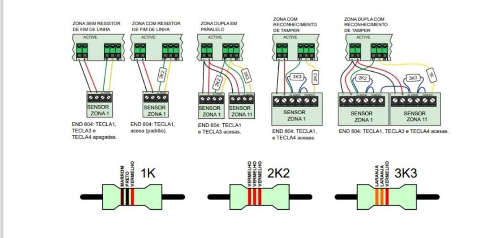
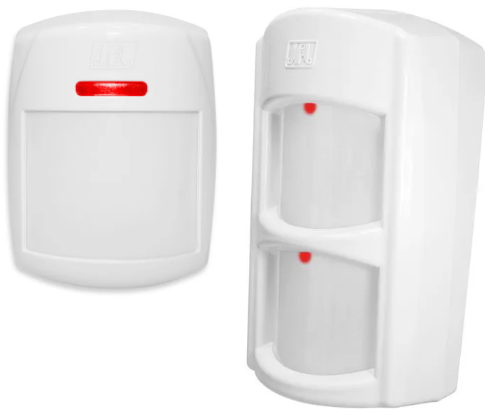

Guia de boas práticas para cabeamento, identificação de zonas e uso de resistores.
1) Padrão de cores no sistema de alarme
Utilizamos um padrão padronizado para alimentação e zonas. Isso facilita futuras manutenções.
Cor do Fio
Função
Observações
🔴 Vermelho
Positivo (+)
Alimentação da central e dispositivos
⚫ Preto
Negativo (–)
Retorno da alimentação
🟢 Verde ou 🔵 Azul
Zona (entrada de sensores)
Definir qual zona será utilizada
🟡 Amarelo ou ⚪ Branco
Comum da Zona
Compartilhado entre sensores da mesma zona
Importante: Sempre siga este padrão para evitar erros de ligação e garantir que qualquer
técnico possa identificar a instalação rapidamente.
2) Resistores e ligação das zonas
Na central Active 20, utilizamos resistores para supervisão de zonas. O padrão é:
Zonas baixas (1 a 9) → Resistor 2k2
Zonas altas (11 a 19) → Resistor 3k3
Código de cores dos resistores
Resistor
Faixas de Cor
Tolerância
2k2 (2.200 Ω)
🔴 Vermelho – 🔴 Vermelho – 🔴 Vermelho (×100)
🟡 Dourado (±5%)
3k3 (3.300 Ω)
🟠 Laranja – 🟠 Laranja – 🔴 Vermelho (×100)
🟡 Dourado (±5%)
O resistor é ligado em série com o fio da zona e o comum.
Isso permite que a central identifique se a zona está aberta, fechada ou em
curto.
3) Ilustração prática
Exemplo visual dos resistores usados:

Guia prático — Instalação de Detectores PIR (Infravermelho) e Micro-ondas
Explicação técnica, alturas recomendadas, cuidados e esquemas (planta baixa) demonstrativos —
tudo em um único arquivo HTML.
Resumo rápido (altura e posições)
Altura recomendada de instalação: 2,2 m a 2,4 m acima do piso
(interno e externo na maioria dos casos). Posição ideal: em cantos para PIR; em paredes laterais ou cantos com visão desobstruída
para micro-ondas; em áreas externas sempre sob proteção (beiral) e evitando incidência direta de sol e
chuva.

1) Detectores PIR (Infravermelho Passivo)
Detectam variação de calor (radiação infravermelha) causada por seres humanos/animais em movimento. São
muito usados em ambientes internos e em áreas externas quando o modelo é específico para isso.
Altura: 2,2 m — 2,4 m (padrão recomendado pela maioria dos fabricantes).
Posição: preferencialmente no canto superior do cômodo, apontando diagonalmente para a
área coberta.
Evitar: janelas, ventilação direta, luminárias com calor intenso, obstáculos como
estantes altas na linha de visão.
Emitindo ondas de rádio, detectam alterações no campo quando há movimento. Normalmente usados em combinação
com PIR (dualtech) para reduzir falsos disparos.
Altura: 2,2 m — 2,4 m (interno e externo).
Cuidado: atravessam materiais leves (vidro fino, drywall). Evite apontar para áreas
externas não desejadas.
Ajustes: regule alcance (sensitivity/range) para evitar detectar movimento além do
perímetro.
3) Boas práticas gerais
Teste o sensor em horário e condições diferentes (dia, noite, vento) para checar falsos positivos.
Use dualtech (PIR + micro-ondas) quando possível — ambos precisam concordar para
alarmar, reduzindo falsos alarmes.
Em área externa, sempre escolha sensores com IP65 ou superior para proteção contra poeira e
água.
Mantenha registros das posições e das configurações (sensibilidade, tempo de alarme) para manutenção
futura.
4) Checklist rápido antes da finalização
Altura medido entre 2,2 m e 2,4 m (use nível/altura).
Sensor protegido de chuva/sol em áreas externas.
Teste de alcance e giro após instalação (modo teste).
Registro da posição, modelo e sensibilidade na ficha técnica do local.